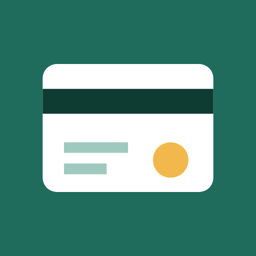

Abonelik Takip
Gizlilik Politikası
Yürürlük tarihi: 7 Kasım 2026
Bu politika, Abonelik Takip Android uygulamasının (“Uygulama”) verilerinizi nasıl işlediğini açıklar.
Toplanan veriler
Uygulama hiçbir kişisel veri toplamaz. Girdiğiniz abonelik bilgileri (ad, tutar, para birimi, ödeme sıklığı, tarih, kategori ve notlar) ile uygulama ayarlarınız yalnızca cihazınızda saklanır.
- Veriler hiçbir sunucuya gönderilmez; Uygulama internet izni bile istemez.
- Reklam, analiz, çökme raporlama veya takip aracı bulunmaz.
- Hesap oluşturmanız gerekmez.
İzinler
- Bildirimler: Yalnızca yaklaşan ödemeleri hatırlatmak için kullanılır. İzni dilediğiniz zaman sistem ayarlarından kapatabilirsiniz.
Yedekleme
- “Yedekle” özelliğini kullandığınızda veriler, sizin seçtiğiniz konuma bir JSON dosyası olarak kaydedilir. Bu dosyanın nerede saklanacağı ve kiminle paylaşılacağı sizin kontrolünüzdedir.
- Android’in otomatik yedekleme özelliği açıksa uygulama verileri, Google hesabınıza bağlı şifreli cihaz yedeğine dahil edilebilir. Bu işlem Google tarafından yürütülür ve cihaz ayarlarınızdan yönetilir.
Verilerin silinmesi
Ayarlar > “Tüm verileri sil” seçeneğiyle veya uygulamayı kaldırarak tüm verileri cihazınızdan silebilirsiniz.
Çocukların gizliliği
Uygulama 13 yaşından küçük çocuklara yönelik değildir ve hiçbir kullanıcıdan bilerek veri toplamaz.
Değişiklikler
Bu politika güncellenirse yeni sürüm bu sayfada, yürürlük tarihiyle birlikte yayınlanır.
İletişim
Sorularınız için: github.com/burhanettiny/abonelik-takip/issues
Privacy Policy
Effective date: November 7, 2026
This policy explains how the Abonelik Takip Android app (“the App”) handles your data.
Data we collect
The App does not collect any personal data. The subscription details you enter (name, amount, currency, billing cycle, dates, category and notes) and your app settings are stored only on your device.
- No data is sent to any server; the App does not even request internet access.
- There are no ads, analytics, crash reporting or tracking tools.
- No account is required.
Permissions
- Notifications: used only to remind you about upcoming payments. You can turn them off at any time in system settings.
Backups
- When you use “Back up”, your data is saved as a JSON file to a location you choose. You control where that file is stored and who it is shared with.
- If Android Auto Backup is enabled, app data may be included in the encrypted device backup linked to your Google account. This is performed by Google and managed in your device settings.
Deleting your data
Use Settings > “Delete all data”, or uninstall the App, to remove all data from your device.
Children’s privacy
The App is not directed at children under 13 and does not knowingly collect data from anyone.
Changes
If this policy changes, the new version will be published on this page with its effective date.